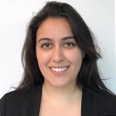

About Me
I’m a data scientist with a PhD in Computer Science and a deep passion for using data to solve meaningful problems and drive positive change in the world. Over the past decade, I’ve worked on impactful projects in healthcare and genomics—developing polygenic risk scores at Color to support initiatives like NIH’s All of Us, and building scalable genomic pipelines that served over 17 million customers at Ancestry. At Betteromics, I focus on integrating diverse data modalities, like clinical and molecular data, to create workflows and analyses that uncover insights and spark innovation. I love tackling complex challenges, collaborating with dynamic teams, and leveraging technology to make personalized solutions more accessible and transformative.
Skills
- Programming: Python, SQL, Bash, R, Perl, C++ (basic proficiency)
- Data Analysis: scikit-learn, pandas, NumPy, TensorFlow, PyTorch, Matplotlib, Plotly
- Big Data: Hadoop, Spark, AWS EMR
- Tools: Jupyter Notebooks, Flyte, SageMaker, Docker, Kubernetes, Airflow
- Analytics: ETL, Django, dbt, Google BigQuery, Metabase, Tableau, Looker
- Domain Knowledge: Genomics, Bioinformatics, EHR, ICD10, Molecular Biology, Insurance Claims
- Leadership: Talent Development, Product Strategy, Data-Driven Decision Making
Experience
Data Scientist - Betteromics (2023 - Present)
- Developed and deployed numerous product demos showcasing the platform’s versatility across genomics and clinical data use cases.
- Defined and implemented customer engagement strategies, increasing customer adoption by ~20%.
- Established workflows for foundational DNA models, improving interpretability and biological insights.
Principal Data Scientist - Color (2020 - 2023)
- Led the development of polygenic risk scores, including R&D, clinical validations, and scalable ETL pipelines.
- Contributed to customer-facing products like NIH’s All of Us and COVID testing solutions.
- Built and led a cross-functional team, focusing on talent development and recruitment.
Staff Data Scientist - Ancestry (2017 - 2020)
- Developed novel algorithms and big data pipelines to analyze genomic data from over 17 million customers.
- Utilized machine learning algorithms to build predictive models for phenotype inference based on genotype.
- Collaborated with cross-functional teams to ensure successful product launches and smooth operations.
Co-Founder - AnimalBiome (2016 - 2017)
- Defined strategic business plans and secured $250K in seed funding from IndieBio.
- Managed early-stage operations, including product development and market evaluation.
Internships
- Insight Data Science (2016): Developed an optimized pipeline for anomaly detection and built a web application for risk estimation using random forests.
- Ancestry (2015): Conducted large-scale network analysis for novel IBD clusters and developed efficient pipelines for SNP/haplotype matching using Hadoop.
- Udacity (2014): Managed Data Science Nanodegree courses and designed new educational materials for online learning.
Education
- PhD in Computer Science, University of California, Davis (2017)
- BS in Computer Science, Shahid Beheshti University (2010)
Publications
- Doroud, L., Ganz, H. H., Firl, A. J., et al. (2017). Community-level differences in the microbiome of healthy wild mallards and those infected by influenza A viruses. mSystems. View PDF
- Dahlhausen, K., Doroud, L., Firl, A., et al. (2017). Characterization and Temporal Shifts of Koala (Phascolarctos cinereus) Gut Microbial Communities Associated with Antibiotic Treatment. PeerJ. View PDF
- Vater, A., Doroud, L., et al. (2016). Draft Genome Sequences of Shewanella sp. UCD-FRSP16_17 and 9 Vibrio Strains Isolated from Abalone Feces. Genome Announcements. View PDF
- Wu, D., Doroud, L., & Eisen, J. A. (2013). TreeOTU: Operational Taxonomic Unit Classification Based on Phylogenetic Trees. arXiv preprint. View PDF
Awards and Achievements
- Patent: Community assignments in identity by descent networks and genetic variant origination. View Patent EP3776556A1
- Google Code Jam: Winner of Google Code Jam to I/O for Women (2016)
- Fellowship: Insight Data Science Fellows Program (2016)
- Fellowship: Graduate Research Fellowship (2015)
- Certificate: Learner-Centered Teaching Certificate, UC Davis (2013)